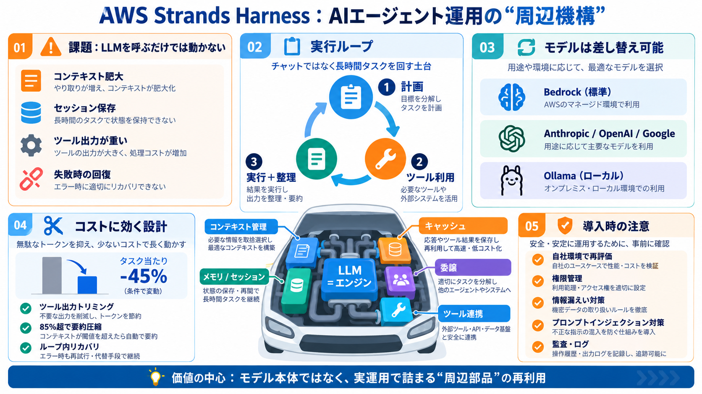

AWS Strands Agents Team Releases Strands Harness
## Benchmark Setup and the 28% Figure The Strands Agents team ran distributed benchmarking on Amazon EC2 with Harbor, t…

オープンソースの新基盤
汎用AIエージェントを「動かすための周辺機構」ごとオープンソース公開。 モデルだけでなく、長時間タスク運用に必要な部品を下支えします。（Strands Harness: Japanese gloss ハーネス = 運用基盤）
“動くまで”が大変
LLMを呼ぶだけなら簡単でも、実運用ではコンテキスト肥大・セッション保存・ツール出力の扱い・失敗時の回復などが重くなります。 その結果、プロトタイプから実装への移行が進みにくいのが現場の課題です。
モデルは“エンジン”
重要なのはLLMそのものより、運転を成立させる部品です。 Strands Harnessは、エージェントの運用を回すための「ハーネス（Harness）」をまとめて用意します。（Japanese: ハーネス=配線/装着部品）
土台の構成要素
Strands Agentsの上に「設定済みのエージェント」を載せ、長時間実行に必要なツール群と運用仕組みを提供します。 具体的には、コンテキスト管理・メモリ/永続セッション・プロンプトキャッシュ・委譲などを含みます。
実行ループが主役
エージェントは、指示を受けて計画し、必要に応じてファイル操作・シェル実行・Webアクセス等のツールを呼び出し続けます。 単発の応答生成ではなく、会話（メモリ/セッション）を保ちながら結果を整理する設計が中心です。
モデル差し替え
デフォルトはAmazon Bedrockですが、差し替え可能です。 Anthropic / OpenAI / Googleのモデルや、Ollama経由のローカルモデルへ切り替えても、同じ枠組みで運用できる点を売りにしています。
“完成品”ではない
Strands Harnessの上に何をどう適用するかは利用者の設計判断に残されています。 例として、コンテキスト管理、会話の永続化、ツール連携、エージェントの振る舞いガイドは開発者が決める必要があります。
コストは“ハーネス”で変わる
AWSは、Strands Harnessの設計（特にコンテキスト管理）が同一基盤モデルでもコストと性能に影響し得るとし、比較として「タスク当たり45%安い」を主張しています。 ただし条件により「28%へ下がる」など変動し得るとも説明されています。
効く理由は3つ
AWSが挙げる根拠は、巨大化しがちなツール出力のトリミング、コンテキストウィンドウ超過時の圧縮、エージェントループ内でのリカバリです。 これらがトークン消費を抑える方向に働いた可能性があります。
“デフォルト値”の例
追加情報として、ツール結果が約1500トークンを超える場合に切り詰め、コンテキストウィンドウが85%を超えたら要約で圧縮するといった具体値が挙げられています。 また別情報では、Harnessが成功率よりコストに効く論点（HarnessTax）と関連づけて整理されています。
商業導線：接続
オープンソース側（Strands Harness/Agents）と、商用運用のマネージド層としてAmazon Bedrock AgentCoreを用意。 ただしAgentCoreは必須ではなく、AWS外でも独立デプロイできるとされています。
価値の中心
モデル本体ではなく、コンテキスト・メモリ・セッション・委譲・キャッシュなど実運用で詰まりやすい部分を部材化。 手戻りを減らし、プロトタイプから実装への移行を速める可能性があります。
“数字”より“設計”
「45%安い」は前提条件次第で再現性が変わるため、自社環境での再評価が必要です。 さらに、ファイル/シェル/Webツールを扱うため実行権限・情報漏えい・プロンプトインジェクション等の安全設計（監査/隔離）が欠かせません。
参照メモ
このスライドは、ユーザー提示文面の内容（および追加で示された数値・比較の補足）を要約しています。 元記事の詳細（モデル名、評価設定、ライセンス、セキュリティ推奨など）は必ず原文で確認してください。
## Benchmark Setup and the 28% Figure The Strands Agents team ran distributed benchmarking on Amazon EC2 with Harbor, t…
# Strands harness ▼28% lower cost with equal or better accuracy across benchmarks\ up and left is better \ DeepSeek …
### Manufacturer Benchmark with Claude Code and Codex AWS claims to compare the harness with Claude Code, Codex, and ot…
The Strands harness launched on Monday, described by AWS engineers as able to run general-purpose agents at a 28% lower …
Strands consumed 28 percent fewer tokens across six benchmark tests when compared to “Claude or GPT models,” claims AWS,…